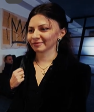

I initially chose Goa Academy because of its advertising; it had good ads, and I later found out about other academies, but I still expressed interest in Goa. However, it seemed that other programming options weren’t better. I calculated it, and Goa still met my criteria. Goa is much more focused on motivating children, which is why I chose it. I really like the learning process because it takes into account the interest that the current generation has in becoming financially stable.  They instill this interest in children from the start, saying, ‘If you learn well, you’ll secure a good salary right away,’ and so on. Therefore, it was really encouraging for me. I expect that they will thoroughly study the basics of as many programming languages as possible and what’s in demand. The profession is one that will require constant development throughout life, but for foundational knowledge, everyone in this field will have a solid base.